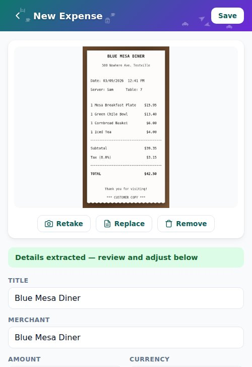
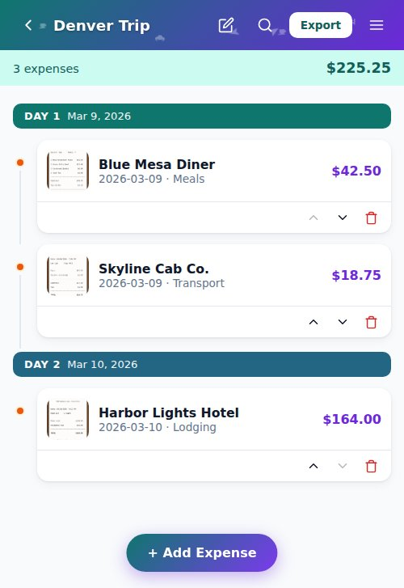
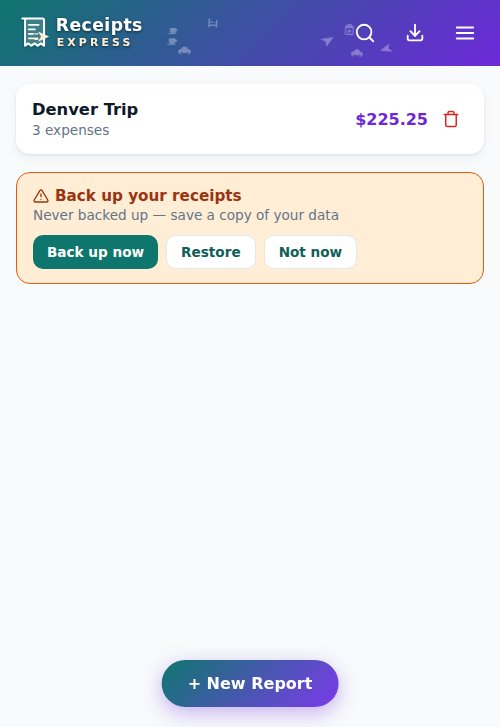

Receipts Express
Standardized Receipt-to-PDF Capture
Runs locally on your device. The app shell is cached when you install it and works offline from then on; the OCR and PDF engines are fetched from the app's own origin the first time you use them, and are cached from then on. No servers, no accounts, zero data sharing.
The Challenge with Expense Capture
Why traditional reporting causes friction and security risks
The Manual Burden
- Receipts accumulate loose in email inbox, pockets, or camera rolls during business travel.
- Reconstructing dates, merchants, and totals weeks later leads to errors and delayed filing.
- No quick way to export polished compilations for downstream travel systems.
The Privacy Trap
- Free scanner apps commonly bundle third-party analytics or ad-tracking SDKs — an app's privacy label is usually the only evidence a user ever sees of it.
- Sensitive financial data (merchant locations, items, card fractions) can end up uploaded to cloud systems nobody in the organization has vetted.
- Lack of structural boundaries leaves personal/corporate data vulnerable to exfiltration.
Enter Receipts Express
A fast, private utility running entirely on your device
Key Pilot Features

Governance & Guidelines
Where the review format came from, and what has and has not been reviewed
Receipts Express's pilot governance structure is formatted after the AI Pilot Program Template published in the public GitHub repository arigatoexpress/AI-Efficiency:
Credit to that repository — arigatoexpress/AI-Efficiency — for establishing the risk-review format we apply to this pilot proposal.
Independent personal project — no affiliation with, endorsement from, or approval by FedEx or any employer.
Why this matters:
Working through a standardized governance checklist upfront is how the developer examined this tool's own privacy posture, legal footing, and risks before proposing it to anyone. The answers are a self-assessment. No organization has reviewed or approved them.
Governance Self-Assessment
| Data Classification ?Data Classification: receipts contain names, merchant locations, purchase itemizations, and partial card numbers. Data like this is normally treated as Confidential. The app's approach is to keep all of it local, inside your browser profile's sandboxed storage; whether that satisfies a particular organization's requirements is for that organization to decide. | Confidential |
| AI Engine Location ?AI Engine Location: organizations commonly restrict transmitting private data to unapproved cloud AI endpoints. Receipts Express avoids the question by self-hosting the Tesseract.js OCR engine, and self-hosting PDF.js for PDF-receipt rasterization the same way. All text recognition and PDF processing runs on your device inside your browser sandbox, and nothing is sent to an external service. The engine files themselves are not part of the install-time precache: they are downloaded from the app's own origin the first time you scan a receipt or open a PDF, then cached for reuse. | On-Device Only |
Data Egress Control ?Data Egress Control: the deployed app carries a Content-Security-Policy that restricts fetch, XMLHttpRequest, WebSocket, EventSource and beacon requests to the app's own origin, and blocks form submissions to other origins. It is delivered in a <meta> tag, because GitHub Pages cannot send custom response headers, so it does not govern top-level navigation — a compromised dependency could still navigate the page elsewhere. It is a strong control, not an absolute one. |
Origin-scoped CSP |
| Human-in-the-Loop ?Human-in-the-Loop: OCR misreads numbers and dates. The engine therefore only fills editable draft inputs: the user is the responsible human owner and has to review and correct every date and amount before exporting the PDF. Nothing in the app checks the figures for you, and none of this has been assessed against an audit standard. | User must verify OCR |
| Tool approval status ?Tool approval status: no organization has reviewed, endorsed, or approved Receipts Express for use with its data. PILOT.md is the proposal asking for that review to start; until it happens, everything in this table is the author's own assessment. | Not yet reviewed |
Install on Your Device
Install as a Progressive Web App (PWA) in seconds
Open link in Safari, tap the Share button , and select Add to Home Screen .
Open link in Chrome, tap the Menu icon ⠇, and select Install app .
Click the Install icon in the address bar, or select Install Receipts Express from the settings menu.

Backup Architecture & Risks
Understanding browser storage lifecycle and durability
Storage Eviction Risk
Since all receipts and images are stored locally in the browser database (IndexedDB) with no cloud backup, they are subject to data loss if:
- The device runs critically low on disk space.
- The user manually clears browser cache, cookies, and website data.
- The OS automatically purges browser caches to free up system space.
- On iPhone and iPad, Safari clears a site's data after about a week without a visit, unless the browser has granted the app durable storage. Installing the app to the Home Screen makes that grant likelier but does not assure it.
In-App Backup Dashboard
Receipts Express includes local backup controls to bundle all database records & base64 images into a single JSON file.
*The app displays a warning card on the home screen if data goes unbacked-up for more than 7 days.
Backup Recommendations
Best practices for pilot participants to safeguard data
When clicking "Back up now", the app generates a single .json file. Easiest: save it straight to your device's local storage (Downloads or Files app) first — no login, no upload wait. Then, for redundancy, copy that same file into whatever storage your organization approves for data at this classification, under an "Expenses-Backup" folder.
Always export a fresh backup after scanning new receipts on a trip. Do not ignore the in-app "Backup stale" warning. Treat the app as a capture utility, not a long-term archive, and export the PDF report promptly.
If you upgrade your phone or switch browsers, export a backup JSON from your old device and click "Restore" on your new device to bring your reports, receipts, and images across. Restore is not a merge: records already on the device that share an ID with a record in the backup are overwritten by the backup's version, and the app asks you to confirm — naming how many will be replaced — before it writes anything?Which way round: restoring an older backup on top of newer edits replaces those edits, and that cannot be undone. Restore onto the device that has the less recent data, not the more recent..

Pilot Next Steps
How to get started and contribute to the pilot
Start with receipts you are free to use. Try the app on synthetic receipts you make up, or on your own personal ones. Do not put an employer's receipts into it unless that organization has reviewed the tool and approved it for data of this kind.
Safe Real-Trip Demo Guidelines
- Use the Live HTTPS Link: Run the app via the production URL: jwtc2000.github.io/Receipts-Express (also linked at the top of the repository). The deployed site carries a Content-Security-Policy that restricts where the page can send data?Covered: fetch, XMLHttpRequest, WebSocket, EventSource and beacon requests are restricted to the app's own origin, and form submissions to other origins are blocked.
Not covered: the policy is delivered in a<meta>tag, because GitHub Pages cannot send custom response headers. A<meta>policy does not govern top-level navigation, so a compromised dependency could still navigate the page elsewhere. — a strong control, not an absolute one. - What is "Dev Mode"?: Regular pilot participants will not use dev mode — that's only for developers running raw source code locally (
npm run dev). The Content-Security-Policy is added by the production build, so it isn't present at all in dev mode, where Vite injects styles inline for hot-reloading. - Export, Then Clear: Scan receipts as they happen, export the complete PDF/CSV on the final day of travel, file it by whatever deadline your organization's expense policy sets, and then clear the data from the PWA?How: open the Menu on the home screen and tap the trash icon on the report to delete it (and all its receipt images) — you'll be asked to confirm. To wipe everything in one step instead, use your browser's site settings → "Clear site data" for this origin.
Why: once a report is exported and safely backed up, there's no reason for receipt images or OCR'd text to keep sitting on your device. Deleting it shortens the window during which that data could be exposed if the device is lost, shared, or compromised.
Note: "Clear site data" also erases the record that you accepted the Terms, since that record is kept in the same browser storage. The app will ask you to accept them again the next time you open it.. - Daily Backups — Local First, Then Approved Storage: Export a JSON backup daily during travel. Easiest: save it to your device's local storage first (Downloads/Files) — no login needed. Then copy it to whatever storage your organization approves for data at this classification, for redundancy.
- Verify and Report: Cross-check OCR data values against the physical receipts and log formatting suggestions.